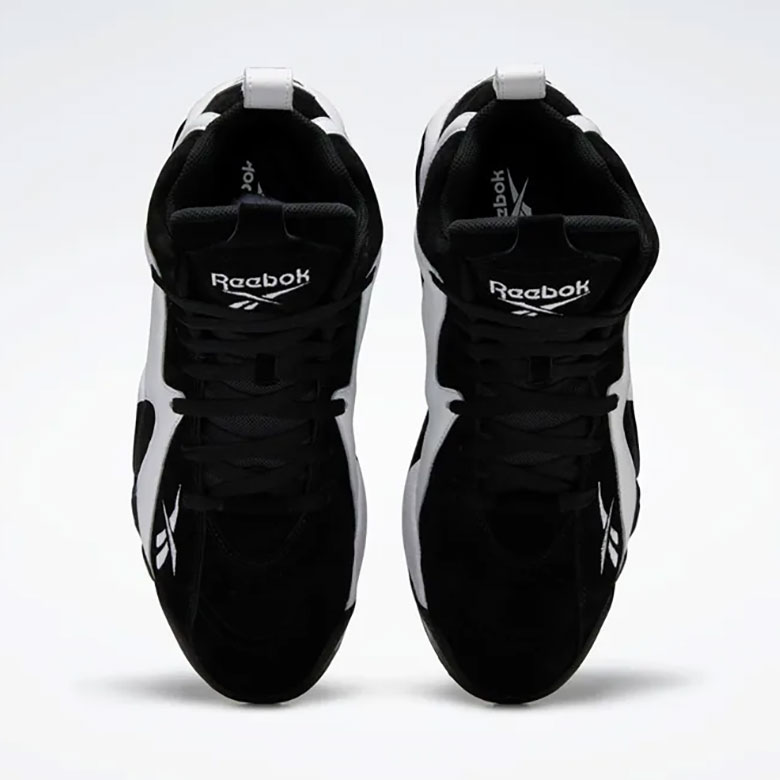
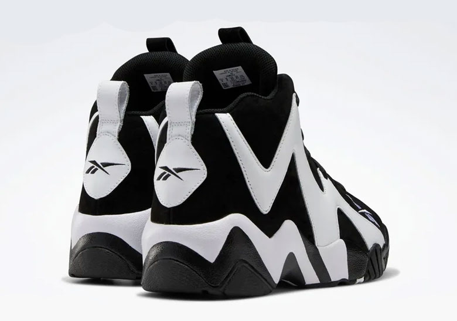

Ngày phát hành : 19/6
Giá bán lẻ tham khảo: 130 USD
Đôi giày signature nổi tiếng của siêu sao NBA 1 thời Shaw Kemp – Reebok Kamikaze II mới chính thức trở lại từ năm 2013.

Phối màu đầu tiên với cảm hứng từ đồng phục của Seattle Sonics (bây giờ là OKC Thunder) năm 1996 đã đi vào quên lãng và giờ lại được Reebok làm sống lại. Khác với Kamikaze 1, “Thần Phong Cảm Tử Quân phiên bản thứ 2” với thiết kế gọn gàng, cao ráo và không tròn trịa như phiên bản đầu nữa, thay vào đó là góc cạnh hơn, cứng cáp hơn, và ngầu hơn.
Ưu điểm của những phiên bản Reebok chính là họa tiết cực kì bắt mắt, với Shaqnosis thì họa tiết những hình tròn tạo cảm giác thôi miên đúng với tên gọi. Còn Kamikaze 2 thì lại cho thấy nét khỏe khoắn, mạnh mẽ bởi những đường nét zig zag trên thân giày.
Quay lại
Mẫu giầy 1
.Mẫu giầy 2
.Mẫu giầy 3
.Mẫu giầy 5
.